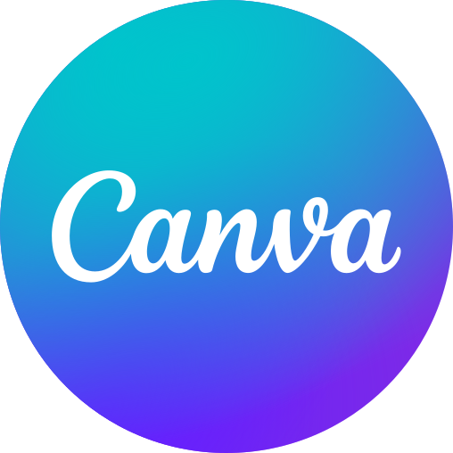

أرسلت طلبًا دقيقًا بالدور والتعليمات والسياق والتوقع، وجاء المخرج ممتاز الصياغة. ما الخطوة التالية؟
أطلب من المساعد أن يراجع نفسه، ثم أعتمد المخرج
أعتمده، فالطلب الدقيق يضمن مخرجًا صحيحًا
أطابقه بمعيار القبول الذي كتبته، وأتحقق من الأرقام والأسماء والمواعيد في المصدر
أرسله لزميل ليقرأه، فالصياغة الجيدة تكفي دليلًا
لماذا. الطلب الجيد يرفع احتمال المخرج الجيد ولا يضمنه. معيار القبول المكتوب قبل الطلب هو ما يجعل الفحص دقائق.
الجلسة 1
الكتابة والمستوى اللغوي
تعطي المساعد نقاطك ومادتك، وتختار المستوى اللغوي بحسب القارئ
تكتشف النص العربي «المترجم في الذهن» وتصلحه
تلخّص بالإنجليزية بمسرد معتمد دون أن تتغير درجة اليقين
01
أكثر استخدامات العمل شيوعًا
أغلب طلبات الكتابة تعديل لنصٍّ موجود، لا إنشاء من فراغ
#1
الكتابة هي أكثر استخدامات ChatGPT في العمل، وأغلبها تحرير نص المستخدم أو ترجمته (OpenAI وNBER، 2025)
2 س
أقل أسبوعيًا في البريد لمستخدمي Copilot النشطين، في تجربة على 7,137 موظفًا (NBER، 2025)
40%
من الموظفين وصلهم «عمل رديء مولّد» خلال شهر، واحتاج إصلاح كل حالة نحو ساعتين (Stanford وBetterUp، 2025)
الدرس: الوقت يُوفَّر حين تعطي التطبيق مادتك ونقاطك وتطلب الصياغة. ويضيع حين ترسل نصًا لم تقرأه؛ فأنت وفّرت دقائقك، وأضعت ساعتين من وقت زميلك.
إعادة الصياغة لا التوليد
أعطِ التطبيق نقاطك ومادتك، واطلب منه الصياغة
توليد من فراغاكتب ردًا على جهة تطلب تقرير استفسارات منسوبيها.
النتيجةيسعدنا تزويدكم بالتقرير المطلوب الذي يتضمن تحليلًا شاملًا لجميع الاستفسارات وتوصيات لتحسين تجربة منسوبيكم… (يعد بما لا تعرف أنك تستطيعه)
صياغة لنقاطكصُغ ردًا رسميًا مختصرًا من هذه النقاط فقط: استلمنا الطلب · التقرير يشمل العدد والموضوعات ومتوسط المدة · يصل قبل نهاية دوام الخميس · بلا توصيات لأنها خارج نطاق الطلب.
النتيجةردّ من خمسة أسطر لا يعد إلا بما قررته أنت.
القاعدة: المحتوى منك، والصياغة منه. كلما زادت المادة التي تعطيها، قلّ ما يخترعه.
المستوى اللغوي يتبع القارئ
الرسالة نفسها بخمس نبرات
المتلقي
النبرة
الطول
ما يحتاجه أولًا
تجنّب
زميل في فريقك
ودية مباشرة
3 أسطر
المطلوب منه والموعد
الرسمية الزائدة
مديرك
مهنية موجزة
5 إلى 8 أسطر
الخلاصة والقرار المطلوب
التفاصيل قبل الخلاصة
جهة حكومية أخرى
رسمية
خطاب كامل
الإشارة والموضوع والمطلوب
العامية والوعود المفتوحة
مستفيد غاضب
متعاطفة وواضحة
قصيرة
الاعتراف بالمشكلة وما سيحدث ومتى
الاعتذار المكرّر والتبرير
شريك دولي
مهنية بالإنجليزية
فقرة أو اثنتان
الردّ على السؤال المحدد
الترجمة الحرفية للمجاملات العربية
الخطاب الرسمي
أعطه هيكل جهتك، لا تتركه يخترع الشكل
اكتب خطابًا رسميًا من مدير عام مركز الواحة للخدمات المشتركة إلى مديرة الموارد البشرية في هيئة المرجان للسياحة الساحلية، ردًا على طلبها تقرير استفسارات منسوبي الهيئة لشهر سبتمبر.
الهيكل: الرقم والتاريخ (اتركهما [ ])، الموضوع، التحية، الإشارة إلى خطابها، متن من فقرتين (استلام الطلب، وما سيتضمنه التقرير وموعد إرساله)، الختام.
اعتمد هذه المعلومات فقط: [النقاط]. فصحى رسمية، بلا عبارات مبالغة، ولا يتجاوز 150 كلمة.
تحقّق قبل الإرسال
الصفة والاسم والجهة مطابقة للأصل
لا وعد بما لم تقرّره
التاريخ الهجري والميلادي وفق نظام جهتك
لا معلومة عن المستفيدين في المتن
صيغة الختام المعتمدة في جهتك
اكتب بصوتي
أعطه أمثلة من كتابتك، ودعه يستخرج أسلوبك
هذه ثلاث رسائل كتبتها بنفسي وأرضى عنها: [الصق الرسائل بعد حذف الأسماء].
صِف أسلوبي في الكتابة في 8 نقاط قصيرة: طول الجمل، طريقة الافتتاح والختام، الكلمات التي أكررها، ما أتجنبه، ومستوى الرسمية. لا تمدحني؛ صِف فقط.
اكتب ردًا على الرسالة المرفقة بأسلوبي الموصوف أدناه. إن احتجت معلومة لا أملكها، فضع [؟] مكانها ولا تخمّنها.
أسلوبي: [النقاط الثماني]
أين تحفظ وصف الأسلوب؟ أضفه إلى وثيقة سياق العمل، أو إلى ميزة «الأنماط» (Styles) إن وُجدت في تطبيقك. أفضل الأمثلة ما كتبته أنت، لا ما أعجبك من غيرك.
تدقيق النص العربي المولّد
علامات تكشف أن النص «مترجَم في الذهن»
العلامة
مثال
الأفضل
«قم بـ» الزائدة
قم بإرسال الملف
أرسل الملف
«حيث» للربط
…الطلب، حيث سيتم…
…الطلب، وسنراجعه…
المبني للمجهول
سيتم العمل على معالجة
سنعالج
مجاملات مترجمة
يسعدني جدًا أن…
ابدأ بالمطلوب
ترجمة المصطلح
«حل الاتصال الأول»
«الحل من أول تواصل» (المسرد)
راجع النص التالي لغويًا بالعربية الفصحى المعاصرة المستخدمة في المراسلات الحكومية السعودية: اختصر «قم بـ» و«يتم» و«حيث» حين لا تلزم، وصحّح علامات الترقيم والهمزات، ولا تغيّر المعنى ولا الأرقام. اعرض التعديلات في جدول: قبل، بعد، السبب.
اللهجة: تفهم أغلب التطبيقات اللهجة السعودية جيدًا، وتكتب بالفصحى أفضل. اطلب صراحةً: «اكتب بالفصحى المبسطة، لا باللهجة».
الترجمة
الترجمة الجيدة تحفظ المصطلح ودرجة اليقين
الأصل
ترجمة خاطئة
الصحيح
were associated with a 22% shorter processing time
أدّى إلى تقليل مدة المعالجة 22%
ارتبط بمدة معالجة أقصر بنسبة 22%
may reduce handling time
يقلّل مدة المعالجة
قد يقلّل
first-contact resolution
دقة الاتصال الأول
الحل من أول تواصل
تصرّف كمترجم إنجليزي–عربي متخصص في تقارير الخدمات الحكومية. ترجم المقتطف المرفق إلى عربية مهنية طبيعية لموجز داخلي موجّه لقيادات المركز.
التزم بالمسرد المرفق، واكتب المصطلح العربي ثم الأصل الإنجليزي بين قوسين عند أول ورود. حافظ على كل الأرقام كما هي، ولا تحوّل الارتباط إلى سبب ولا الاحتمال إلى حقيقة.
سلّم جدولًا: الأصل، الترجمة، ثم قائمة بالمواضع التي تحتاج مراجعة بشرية.
قبل أي طلب كتابة
قائمة تحقق من ثلاثة أبواب، تُكتب قبل الطلب
الباب
البند
ما التقطه في تشغيل الحل
الدقة
كل رقم وتاريخ واسم كما في النقاط، ولا رقم زائد
ملخص كتب 20 طلبًا مغلقًا، والنقاط تقول 19
المستوى اللغوي
رسمي بين جهتين، ومباشر بين الزملاء
«سعادة» و«تفضلوا بقبول» لا تبقى في الرسالة الداخلية
التنسيق
إشارة وموضوع ومتن وخاتمة، وحد أعلى للكلمات
الخطاب 129 كلمة، والرسالة 59، والملخص 70
درجة اليقين من الدقة: «متوسط 7.4 يوم» صار في ملخص إنجليزي «reduced processing time». العدد صار اتجاهًا لم يقله أحد.
نقطة تحقق
«may reduce» صارت «يقلّل»
في موجز عربي لمديرة الإدارة، ترجم المساعد «may reduce handling time» إلى «يقلّل مدة المعالجة». ما المشكلة؟
تغيّرت درجة اليقين: الأصل احتمال، والترجمة جزم
المصطلح كان يجب أن يبقى بالإنجليزية
لا مشكلة، فالمعنى العام صحيح
الجملة ركيكة وتحتاج تدقيقًا لغويًا
لماذا. «may» احتمال. في موجز لصاحب قرار، الجزم يحوّل نتيجة أولية إلى حقيقة. لذلك نكتب في طلب الترجمة والتلخيص: حافظ على درجة يقين الأصل.
المختبر 2.1 · 25 دقيقة
خطاب رسمي بمستويين وملخص إنجليزي
من نقاط مكتوبة إلى خطاب رسمي لهيئة المرجان، ثم النص نفسه بمستوى لغوي آخر للموظفين، ثم ملخص إنجليزي بمسرد المركز، وكلها تُفحص بقائمة تحقق.
✱ إضافي: استخرج أسلوبك من ثلاث رسائل كتبتها، واطلب ردًا بصوتك
الجلسة 2
القراءة والاستخراج
تختار نوع الملخص بحسب القرار الذي سيُتخذ به
تستخرج من المستندات إلى جدول بأعمدة تحددها، مع الدليل
تتحقق بعيّنة تراجعها بنفسك، وتعرف ما تكشفه العيّنة وما لا تكشفه
02
«لخّص» ليست تعليمة كاملة
اختر نوع الملخّص بحسب ما سيفعله القارئ
ملخص تنفيذي
لمن سيقرّر: الخلاصة، والأرقام الحاسمة، والقرار المطلوب.
«في 5 أسطر لمدير لم يقرأ التقرير»
استخراج
لمن سينفّذ: جدول بأعمدة محدّدة.
«المهام: المسؤول، الموعد، الحالة»
مقارنة
لمن سيختار: معايير ثابتة، وأساس واحد.
«التكلفة لثلاث سنوات شاملة الضريبة»
أسئلة وأجوبة
لمن سيسأل: إجابات من النص مع موضعها.
«ما شروط العمل عن بعد الاستثنائي؟»
جرّب: قبل أن تطلب ملخصًا، أكمل الجملة: «سيقرأ هذا ___ ليقرّر أو يفعل ___.» ثم ضع الجملة في الأمر.
ماذا «يقرأ» التطبيق فعلًا؟
المستند الطويل لا يُقرأ دائمًا كما تقرؤه أنت
المنتصف يضيع في النصوص الطويلة، كما رأينا أمس.
بعض التطبيقات تسترجع أجزاء من الملف الكبير بدل قراءته كاملًا، فقد يفوتها جدول في الصفحة 9.
ملف PDF الممسوح ضوئيًا صورة لا نص؛ تأكّد أن التطبيق استخرج النص (اسأله: «ما أول جملة في الصفحة 3؟»).
الجداول والحواشي أكثر ما يُقرأ خطأً، والحواشي غالبًا تحمل الشروط.
قبل أن تبدأ: كم صفحة في الملف المرفق؟ ما عنوان الجدول في الصفحة الأخيرة؟ وما الملاحظة المكتوبة أسفل الصفحة 3؟ أجب بنص الملف فقط.
حلّ عملي: للمستندات الطويلة جدًا قسّم المهمة: «استخرج من الصفحات 1–10»، ثم «من 11–20»، ثم اجمع.
التحقق يبدأ من الأمر
اطلب الدليل مع كل بند، فيصير التحقق دقائق لا ساعة
بلا دليلما أبرز المخاطر في المحضر؟
النتيجةتأخر التكامل، وضغط الاستفسارات، وتجاوز الميزانية. («تجاوز الميزانية» غير موجود؛ كيف ستعرف؟)
مع الدليلما أبرز المخاطر في المحضر؟ لكل خطر: انقل العبارة الدالة حرفيًا ورقم الصفحة. إن لم تجد عبارة، فلا تذكر الخطر.
النتيجةتأخر التكامل · «متأخرة نحو أسبوعين عن الخطة» · ص 2 اختبار الوصول · «لم يُجدول حتى تاريخه» · ص 3
تنبيه: قد يختلق التطبيق الاقتباس نفسه أيضًا. لكن الاقتباس قابل للبحث (Ctrl+F) في ثوانٍ؛ الادعاء العام ليس كذلك.
الاستخراج
حدّد الأعمدة قبل أن تطلب الجدول
بصفتك سكرتير لجنة،استخرج من المادة المرفقة كل بند يتطلب عملًا.الجدول سيُتابَع أسبوعيًا في اجتماع الإدارة، فالمهم المسؤول والموعد.الأعمدة بهذا الترتيب: البند · النوع (قرار/مهمة/مخاطرة/مقترح لم يُقرّ) · المسؤول بالصفة · الموعد كما ورد · العبارة الدالة · الصفحة. اكتب «غير محدد» حيث يغيب المسؤول أو الموعد، ولا تستنتجهما.
لماذا ينجح؟
عمود «النوع» يفصل القرار عن المقترح
«كما ورد» يمنع تحويل «قبل الإطلاق» إلى تاريخ
«غير محدد» يكشف الثغرات بدل إخفائها
الأعمدة الثابتة تسمح بلصق النتيجة في Excel مباشرة
الدورالتعليماتالسياقالتوقّع
عشرون نموذج طلب تدريب
النماذج المتشابهة تخفي أربع حالات لا تشبه غيرها
ما في النموذج
ما يفعله المساعد غالبًا
القاعدة في الطلب
التكلفة مكتوبة بالحروف
يترك الخلية فارغة، أو يكتب النص
حوّلها إلى رقم واذكر ذلك
تاريخ هجري فقط
يحوّله بنفسه، ويخطئ بأيام أو بشهر
انقله كما هو، والتحويل بالتقويم الرسمي
خانة الاعتماد فارغة
يملؤها «نعم» كبقية الصفوف
الفارغ يبقى «فارغ»
تكلفة معدلة في الملاحظات
يأخذ الرقم من الخانة
النص الذي أُخذت منه كل تكلفة
كيف تتحقق من 40 بندًا دون أن تعيد العمل؟
تحقّق بالعيّنة: كل الأرقام، وثلاثة بنود عشوائية
كل الأرقاموالمبالغ والنسب
←
كل الأسماءوالمواعيد
←
3 بنود عشوائيةبالاقتباس والصفحة
←
ما الناقص؟بند في الأصل غاب عن الجدول
إن نجحت العيّنة: اعتمد الباقي بثقة معقولة، وسجّل ما فحصته.
إن فشل بند واحد: لا تصحّح البند وحده. افحص كل البنود من النوع نفسه، وعدّل الأمر.
من تشغيل الحل المرجعي
العيّنة التقطت خطأً من أربعة، والقواعد اثنين، والدليل الرابع
عيّنة من خمسة نماذج
التقطت خطأً واحدًا: خانة الاعتماد الفارغة في 309 صارت «نعم».
قواعد على كل الصفوف
تكلفة فارغة (304)، وتاريخ بداية خارج نوفمبر (307). خطآن لم تمر عليهما العيّنة.
الدليل بجانب الخلية
318: الخانة تقول 8,000 والملاحظات تقول 7,200. لا تلتقطه عيّنة ولا قاعدة.
الدرس: العيّنة تقدّر نسبة الخطأ، والقواعد تمر على كل الصفوف، والدليل يكشف ما لا يبدو خطأً. الثلاثة معًا أقل من وقت الاستخراج اليدوي.
مقارنة المستندات
قارن على أساس واحد، واطلب رقم الصفحة لكل فرق
العرض
السعر في الصفحة الأولى
ما تخفيه الصفحات الأخرى
الأفق
1,450,000 شامل الضريبة
رقم مختلف في جدول الأسعار
نسيج
1,180,000
استثناءات في الصفحة الأخيرة
رواسي
«تبدأ من 520,000 سنويًا»
زيادة سنوية في الحاشية
قارن العروض الثلاثة المرفقة لمنصة مركز الاتصال على أساس واحد: التكلفة الكاملة لثلاث سنوات شاملة الضريبة وكل ما يلزم لتشغيل المتطلبات نفسها.
المعايير: التكلفة، الاستضافة، مساعد المحادثة العربي، التكامل، اتفاقية مستوى الخدمة، الدفع المقدم، الضمان.
لكل خلية: القيمة ورقم الصفحة. ثم طابق كل عرض مع دليل المشتريات المرفق، واذكر أي شرط مخالف. لا توصِ بمورد.
نقطة تحقق
عشرون صفًا مستخرجًا: كيف تتحقق؟
استخرج المساعد عشرين نموذجًا إلى جدول، وستُعتمد منه مبالغ. ما أفضل تحقق في عشر دقائق؟
أطلب الاستخراج من مساعد آخر، وأعتمد ما اتفقا عليه
عيّنة عشوائية أراجعها بيدي، وقواعد تمر على كل الصفوف، ودليل بجانب كل مبلغ
أعيد استخراج النماذج العشرين بنفسي وأقارن
أتأكد أن الجدول كامل ومرتب ولا خلية فارغة فيه
لماذا. كل طريقة تلتقط نوعًا من الخطأ: العيّنة تقدّر النسبة، والقواعد تمسك الشاذ في كل الصفوف، والدليل يكشف الرقم الذي أُخذ من المكان الخطأ.
المختبر 2.2 · 25 دقيقة
عشرون نموذجًا في جدول واحد
عشرون نموذج طلب تدريب: تستخرج حقولها إلى جدول بأعمدة تحددها أنت، ثم تراجع عيّنة بيدك وتصحح ما وجدته.
✱ إضافي: قارن عروض الموردين الثلاثة على أساس ثلاث سنوات، مع رقم الصفحة لكل فرق
الجلسة 3
الجداول والتحقق من الأرقام
تجعل المساعد يحسب بالكود، ولا تقبل رقمًا «من الذاكرة»
تطلب وصف البيانات قبل أي استنتاج، وتكتب التعريفات قبل التصنيف
تطابق كل رقم في الملخص بجدول أعدت حسابه بنفسك
03
النموذج يتوقّع الكلمة التالية، حتى لو كانت رقمًا
اطلب الحساب بالكود، ولا تقبل رقمًا «من الذاكرة»
أنتكم مجموع التكلفة المخططة في هذا الجدول؟ [جدول ملصوق نصًا]
بلا أداةالمجموع التقريبي 486,000 ريال. (رقم معقول الشكل، غير محسوب)
أنتارفع الملف، واطلب: «احسب بتنفيذ الكود، واعرض الصيغة أو الكود الذي استخدمته، وعدد الصفوف التي دخلت في الحساب».
مع أداة التحليل14 صفًا · صف نصّي («3,200 ريال») لم يدخل الحساب · مجموع الصفوف الرقمية 467,900.
كيف تعرف أنه حسب فعلًا؟ تظهر عادةً عبارة مثل «تحليل» أو «تشغيل الكود» أو «Analysis»، ويمكنك فتح الكود. إن لم تظهر، فالرقم توقّع.
التطبيقات
ثلاثة أماكن لتحليل البيانات
المكان
أمثلة
مناسب لـ
انتبه
تطبيق المحادثة مع تنفيذ الكود
ChatGPTClaudeGemini
تحليل سريع، تصنيف، رسوم
الملف يخرج من جهازك
داخل برنامج الجداول
Copilot في ExcelGemini في SheetsClaude لـ Excel
صيغ حية، جداول محورية، تعديل الملف نفسه
يحتاج ترخيصًا غالبًا
دفتر بمصادر
Gemini Notebook
أسئلة عن جداول ضمن مستندات
تأكد أنه حسب بالكود، لا من نص الملف
القاعدة: إن كانت النتيجة ستبقى في ملف Excel يحدّثه آخرون، فاطلب صيغًا داخل الملف. وإن كانت إجابة لمرة واحدة، فالتحليل في المحادثة يكفي.
قبل التحليل
اطلب وصف البيانات قبل أي استنتاج
1 · صِفالأعمدة، الأنواع، الفراغات
←
2 · نظّفالمكرر، التهجئة، الأنواع
←
3 · حلّلبتعريفات مكتوبة
←
4 · ارسمرسم واحد لكل رسالة
←
5 · طابقالمجموع مع ما تعرفه
صِف هذا الملف قبل أي تحليل: عدد الصفوف والأعمدة، ونوع كل عمود، والقيم الفارغة، والصفوف المكررة، والقيم المختلفة في عمود «القناة» مع عدد كل منها. لا تستنتج أي شيء بعد، وتوقف بعد الوصف.
تصنيف مئات النصوص
التصنيف الجيد يبدأ بتعريفات مكتوبة، وينتهي بعيّنة تراجعها بنفسك
صنّف كل استفسار في عمود «نص الاستفسار» إلى فئة واحدة من هذه الفئات:
تأخر معالجة الطلب: يسأل عن طلب قائم تأخر.
صعوبة الدخول للبوابة: تسجيل الدخول أو رمز التحقق أو الأعطال التقنية.
[… بقية الفئات بتعريف سطر لكل منها]
أخرى: لا ينطبق عليه أي تعريف.
أضف عمودين: الفئة، ودرجة الثقة (عالية/منخفضة). احسب بالكود عدد كل فئة بعد حذف المكرر، وارسم أعمدة أفقية مرتبة.
لماذا «أخرى»؟ بدونها يُجبر التطبيق على حشر كل نص في فئة، فتتضخم الفئات الكبيرة.
راجع 20 صفًا عشوائيًا بنفسك. إن اختلفت مع 4 منها أو أكثر، فعدّل التعريفات وأعد التصنيف.
التحقق على بيانات تعرفها
طابق الأرقام بمصدر مستقل قبل أن تعرضها
السؤال
قارن مع
هل عدد الصفوف بعد حذف المكرر منطقي؟
458 صفًا في الملف، والتقرير الربعي يقول 452
هل مجموع الفئات = عدد الصفوف؟
جمع يدوي سريع للجدول الناتج
هل الفئة الأكبر هي نفسها؟
جدول الاستفسارات في التقرير (ص 6)
هل تغيّر رقم حين أعدت التشغيل؟
شغّل التصنيف مرتين؛ الاختلاف الكبير علامة غموض
لا تتوقع تطابقًا تامًا مع التصنيف اليدوي في التقرير؛ التصنيف حكم. لكن الترتيب والحجم التقريبي يجب أن يتفقا.
إذا لم تتطابق المجاميع فلا تعرض الرسم. اسأل: «أي الصفوف لم تُصنّف أو صُنّفت مرتين؟».
من تشغيل الحل المرجعي
خمسة أرقام في الملخص: اثنان طابقا، وثلاثة صُحّحت
الرقم في الملخص
الملخص
أُعيد حسابه
الحكم
إجمالي الاستفسارات
458
452
مصحَّح: ستة صفوف مكررة
الاستفسارات عبر البوابة
98
200
مصحَّح: «البوابة» و«البوابه» قناة واحدة
الجهة الأكثر استفسارًا
هيئة المرجان
هيئة المرجان
مطابق
استفسارات سبتمبر
148
148
مطابق
متوسط مدة المعالجة (يوم)
5.8
7.4
مصحَّح: المتوسط للمغلق فقط
كل رقم خاطئ هنا حُسب بالكود. الكود يضمن الحساب، ولا يضمن أن السؤال المحسوب هو سؤالك.
الرسوم
رسم واحد لرسالة واحدة، والجدول خلفه دائمًا
مقارنة فئات
أعمدة أفقية مرتبة من الأكبر. تُقرأ أسماء الفئات العربية بسهولة.
تغيّر عبر الزمن
خط بالأشهر. لا تقارن خطوطًا كثيرة؛ ثلاثة على الأكثر.
جزء من كل
عمود مكدّس أو أعمدة. الدائرة تصلح لثلاث شرائح على الأكثر.
ارسم أعمدة أفقية لعدد الاستفسارات حسب الفئة، مرتبة تنازليًا، بعنوان يقول الاستنتاج لا الموضوع. اعرض الجدول الذي بُني عليه الرسم أسفله، واكتب عدد الصفوف المستخدمة.
العربية في الرسوم: بعض أدوات الرسم تعرض الحروف العربية مفككة أو معكوسة. إن حدث ذلك فاطلب ملف Excel بالجدول، وارسمه في Excel أو Sheets.
الجداول التي ورثتها
اطلب الشرح قبل الإصلاح، والإصلاح صيغةً لا رقمًا
الخطأ
ماذا يعني
#REF!
الصيغة تشير إلى خلية أو ورقة حُذفت
#VALUE!
نص في مكان رقم («3,200 ريال»)
مجموع ناقص
نطاق لا يشمل الصفوف الأخيرة
رقم مكتوب يدويًا
قيمة ثابتة بدل صيغة، فلا تتحدّث
نسبة مقلوبة
المخطط ÷ المصروف بدل العكس
راجع هذا المصنّف كمدقق مالي. لكل خلية فيها خطأ أو قيمة مشبوهة: الموقع، المشكلة بلغة بسيطة، الصيغة الصحيحة. ابحث أيضًا عن الأرقام المكتوبة يدويًا حيث يُتوقع صيغة، والنطاقات التي لا تشمل كل الصفوف، والقيم التي تخالف سقفًا معروفًا. لا تعدّل الملف؛ أعطني قائمة مرتبة بالأولوية.
نقطة تحقق
مجموع لجدول ألصقته نصًا
ألصقت جدولًا في المحادثة، فأجاب المساعد: «المجموع 486,000». سيدخل الرقم في تقرير. ماذا تفعل؟
أطلب منه أن يتأكد من الرقم مرة أخرى
أقبله، فالجمع عملية بسيطة لا يخطئ فيها
أسأل مساعدًا آخر، وأعتمد الرقم إن اتفقا
أرفع الملف وأطلب الحساب بالكود مع عدد الصفوف، ثم أعيد حسابه في جدول البيانات
لماذا. الحساب بالكود يجعل الرقم محسوبًا لا متوقعًا، وعدد الصفوف يكشف ما استُبعد، وإعادة الحساب المستقلة تكشف السؤال الخطأ.
المختبر 2.3 · 25 دقيقة
حلّل الاستفسارات وطابق كل رقم
جدول استفسارات الربع الثالث: تطلب وصفه، ثم تحليله برسم وملخص، ثم تعيد حساب كل رقم في الملخص بجدول محوري وتطابقه.
✱ إضافي: راجع مصنّف ميزانية التدريب: كم خطأ وجدت، وأيها يغيّر رقمًا في التقرير الربعي؟
الجلسة 4
العروض والصور
تحوّل تقريرًا طويلًا إلى عرض ينتهي بقرار، بعناوين استنتاجية
تكتب طلب صورة واضحًا، وتراجع الصورة قبل استخدامها
تذكر مصدر كل رقم، وتسِم المحتوى المولّد
04
من التقرير إلى العرض
العرض للقيادة ليس تقريرًا مختصرًا، بل قصة تنتهي بقرار
أين نقف3 أرقام فقط
←
الفجوةما دون المستهدف ولماذا
←
البدائل2 أو 3، بكلفتها
←
التوصيةواحدة، ومبررها
←
القرار المطلوبممن، وبأي موعد
تصرّف كمصمم عروض تنفيذية ومستشار في سرد البيانات لصنّاع القرار.حوّل التقرير الربعي المرفق إلى قصة عرض تقود إلى قرار: الرسالة الرئيسة، والشواهد، والبدائل، والتوصية، والقرار المطلوب.الجمهور المدير العام، والوقت خمس دقائق. استخدم التقرير فقط، واربط كل رقم بصفحته، وفكرة واحدة لكل شريحة.قدّم مخططًا من 6 شرائح، لكل شريحة: عنوان استنتاجي، وشاهد رقمي مع الصفحة، وملاحظة متحدث من سطرين. لا تصمّم الشرائح بعد.
عنوان الشريحة
العنوان جملة تقول الاستنتاج، لا كلمة تقول الموضوع
عنوان الموضوع
عنوان الاستنتاج
المؤشرات الرئيسية
تحسّنت المؤشرات الستة، لكن لم يبلغ أيٌّ منها مستهدفه
الأداء حسب الجهة
صندوق السدرة الأبطأ: 4.6 يوم مقابل متوسط 3.8 للمركز
قنوات الخدمة
البوابة تتقدم، لكن الهاتف ما زال يحمل ثلث الطلبات
التوصيات
اعتماد أمر التغيير قبل 22 أكتوبر يحمي موعد الإطلاق
اختبار سريع: اقرأ عناوين الشرائح وحدها بالترتيب. هل تفهم القصة والقرار المطلوب؟ إن لم تفهم، فالعرض يحتاج إعادة كتابة لا تصميمًا.
من المخطط إلى الشرائح
أدوات العروض، وما تراجعه في كل منها بالعربية
Gamma

CanvaCopilot في PowerPointClaude لـ PowerPointGemini NotebookGemini في Slides
كلها تقبل مخططًا نصيًا. الأفضل في جهتك ما يحترم قالبها المعتمد ويُفتح في برامجها.
راجع في كل عرض عربي
الاتجاه من اليمين لليسار، والجداول والرسوم أيضًا
الأرقام والنسب والإشارات (+ و−) في مواضعها، لم تنعكس ولم تتبدّل
الخط العربي لم يُستبدل بخط افتراضي
كل رقم مطابق للتقرير بصفحته
الشعارات من الملفات المعتمدة، لا مولّدة
المصادر والوسوم
تحت كل رقم مصدره وصفحته، وتحت كل صورة وسمها
الشريحة تقول
المصدر
عالج المركز 48,600 طلب
التقرير الربعي، ص 3
الرضا 81%
جدول المؤشرات، ص 3
الانتظار الهاتفي 4.5 دقائق
ص 5
زيادة متوقعة بنحو 30%
ص 2
رقمان للرضا في تقرير واحد: الملخص التنفيذي يقول 84%، وجدول المؤشرات يقول 81%. المعتمد ما في الجدول، والملحق يشرح لماذا تُقرأ نتيجة سبتمبر بحذر.
الوسم: «صورة مولّدة بالذكاء الاصطناعي» تحت الغلاف، و«تصميم بمساعدة الذكاء الاصطناعي» تحت الإنفوجرافيك.
إطار RICE للصور
كلما وضحت مكوّنات الصورة وأسلوبها وتوزيعها، اقتربت مما تريد
تصرّف كمدير فني ومصمم هوية بصرية لمواد التواصل الداخلي في جهة حكومية، متخصص في الرسوم ثلاثية الأبعاد النظيفة.أنشئ صورة غلاف أفقية بنسبة 16:9 لعرض عن إطلاق بوابة الخدمات الذاتية: هاتف ذكي تظهر عليه واجهة بأيقونات مبسّطة، وبجواره درع بقفل يرمز إلى حماية البيانات.الأسلوب رسم ثلاثي الأبعاد بإضاءة ناعمة، بألوان الهوية: أخضر الواحة #0F766E والرملي الفاتح والذهبي بحد أقصى 10%. الهاتف في الثلث الأيسر. لا أشخاص ولا أيدٍ ولا شعارات ولا أي نص داخل الصورة.اترك الثلثين الأيمنين مساحة فاتحة لعنوان عربي يُضاف لاحقًا، بلا تشوّه في حواف الهاتف أو الأيقونات.
الدورالتعليماتالسياقالتوقّع
قبل النشر
خمس قواعد للصور المولّدة في العمل
لا نص عربي داخل الصورة. أغلب النماذج تشوّه الحروف العربية؛ أضف النص في برنامج التصميم.
لا وجوه حقيقية ولا شعارات. الشعار من الملف المعتمد، والوجوه بموافقة مكتوبة.
إرشادات سدايا للذكاء الاصطناعي التوليدي تطلب الإفصاح عن المحتوى المولّد ووسمه، واحترام الملكية الفكرية، والحذر من التزييف العميق.
من جدول إلى إنفوجرافيك
الإنفوجرافيك يبدأ من الأرقام المعتمدة، لا من الصورة
من التقرير المرفق، اختر 4 أرقام فقط تلخّص الربع الثالث لموظفي المركز، مع الصفحة لكل رقم. لكل رقم: العنوان (4 كلمات)، والرقم، وجملة شرح واحدة. لا تختر رقمًا يختلف بين موضعين في التقرير دون أن تنبّهني.
اعتمد الأرقام الأربعة بنفسك.
صمّم في Canva أو Gemini Notebook أو أداة العروض، من قالب بألوان الهوية.
اكتب النص العربي بنفسك داخل التصميم، ولا تطلبه داخل صورة مولّدة.
راجع كل رقم مرة أخيرة على التصميم النهائي.
في التقرير الربعي رقمان للرضا. هل لاحظتهما؟ ستحتاج أن تعرف أيهما المعتمد قبل أن تضعه في عرض للمدير العام.
نقطة تحقق
غلاف بحروف عربية مشوّهة
طلبت صورة غلاف فيها عنوان عربي، فجاءت الحروف مشوّهة، والعرض بعد ساعة. ما الحل الأفضل؟
أولّد الصورة بلا نص مع مساحة فارغة، وأكتب العنوان في أداة العروض، وأسِم الصورة
أكتب العنوان بالإنجليزية بدل العربية
أعيد التوليد حتى تظهر الحروف سليمة
أبحث عن صورة جاهزة من الإنترنت وأضعها دون ذكر مصدرها
لماذا. النص في أداة العروض يُكتب بخط الهوية ويُعدَّل لاحقًا، والصورة تبقى خلفية موسومة بأنها مولّدة.
المختبر 2.4 · 25 دقيقة
عرض قصير وصور من موجز
من موجز المدير العام والتقرير الربعي إلى عرض من ست شرائح، لكل رقم فيه مصدره وصفحته، وصورة غلاف وإنفوجرافيك موسومان.
 ChatGPT
ChatGPT ClaudeGemini
ClaudeGemini Copilot في ExcelGemini في Sheets
Copilot في ExcelGemini في Sheets Midjourney
Adobe Firefly
Canva
Midjourney
Adobe Firefly
Canva